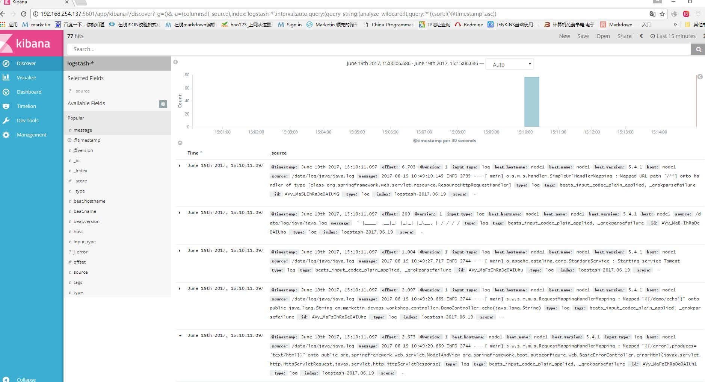
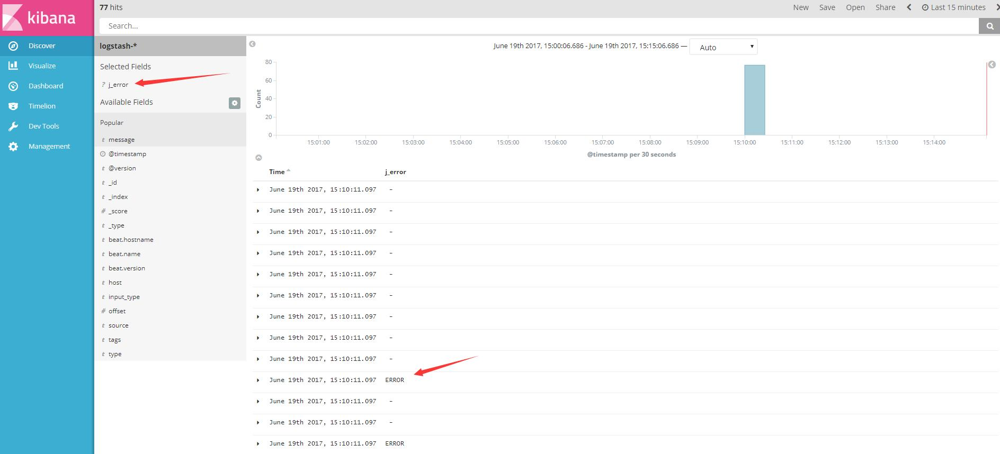
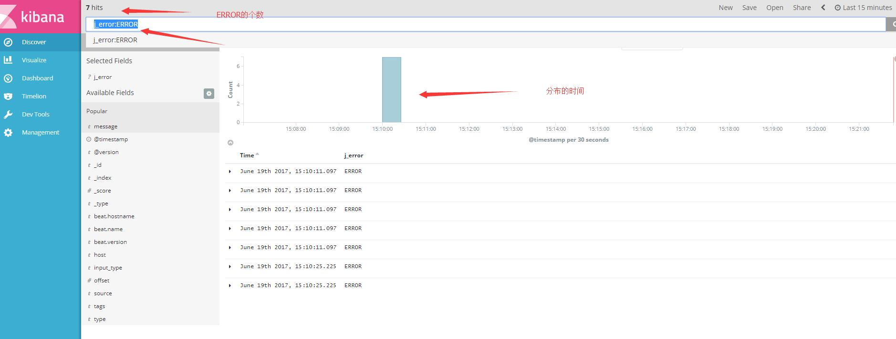
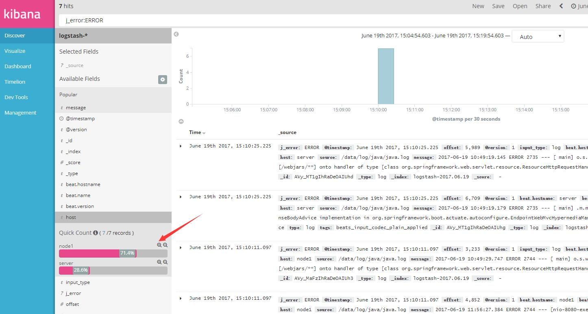
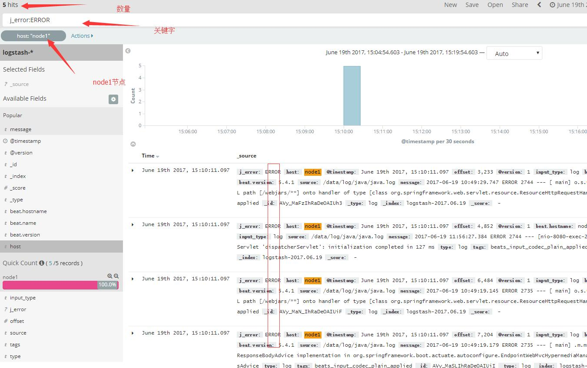

主要是两个方面的使用，一个是Logstash使用，一个是页面的查看。 logstash的功能比较强大，配置方法比较复杂，下面以例子来解释。
server：192.168.254.137 node1: 192.168.254.135
指定被分析的日志
下面是在node1节点上配置：
vim /etc/filebeat/filebeat.yml...
- input_type: log
# Paths that should be crawled and fetched. Glob based paths.
paths:
- /data/log/java/*.log
...下面是在server上配置
mkdir /data/patterns
cd /data/patterns
vim java添加下面这一句话
JERROR ERROR修改配置文件
vim /etc/logstash/conf.d/logstash.confinput {
beats {
port => "5044"
}
}
filter {
grok {
patterns_dir => "/data/patterns"
match => [ "message","%{JERROR:j_error}"]
}
}
output {
elasticsearch {
hosts => [ "192.168.254,137:9200" ]
}
}注释:“message”是系统定义的关键字，里面包含日志文件一行的所有内容。patterms_dir是指定正则规定的地方，"%{JERROR:j_error}"截取正则，并将其重新赋值为j_error.
详情看备注。
systemctl restart logstash
systemctl restart filebeat
点击我们新加的关键字j_error

可以看到ERROR的大致情况
再看看具体的情况及分布时间
再最上面的输入栏中输入j_error:ERROR

查看node1服务器上面的ERROR数量
点击node1节点

查看数据分布

大体上的情况就已经知道了。
Logstash配置
vim /etc/logstash/conf.d/logstash.confinput {
beats {
port => "5043"
}
}
filter {
grok {
match => { "message" => "%{COMBINEDAPACHELOG}"}
}
geoip {
source => "192.168.254.131"
}
}
output {
elasticsearch {
hosts => [ "192.168.254.130:9200" ]
}
}
注释： - input: 输入方式有多种，我们一般用的是这两种：一种是安装beats插件，如上。还有一种是按照文件读取
input {
file {
path => "/data/tomcat/logs/*.log"
start_position => "beginning"
}
}
filter:将日志数据进行整理过滤，里面有好多关键字：
grok： 目前是logstash中把非标准化的日志数据转换成标准化并且可搜索数据最好的方式。Logstash默认提供了能分析包括java堆栈日志、apache日志在内的120种形式。更多格式
如没有特别的需求的话，使用默认的apache日志形式就能达到想要的效果，如下。
grok{
match => {"message" => ["%{COMBINEDAPACHELOG}"]}
}
但如果想要监控更多的信息，比如url上的参数，那么默认的表达式将没办法满足我们的需求，这时我们就需要自己动手去编写一些符合我们业务需要的表达式，并告诉logstash以某种期望的方式进行数据转换。
首先，在logstash的根目录下创建一个patterns文件夹，这个文件夹默认是没有的。
其次，在patterns文件夹中创建文件test_pattern（这里为了方便所以没有按照pattern的功能对文件进行命名，在实际应用中最好按照功能来对文件命名）。在test_pattern文件中可以按照“名称 正则表达式”这样的格式自定义一些正则表达式，以便在grok中进行使用。
最后，在使用的时候一定要把pattern_dir这个参数带上，否则logstash无法识别你自定义的这些正则表达
grok {
patterns_dir => ["/home/keepgostudio/download/logstash-5.2.0/patterns"]
match => {
"message" => ["%{PARAMS_APACHELOG}", "%{NO_PARAMS_APACHELOG}"]
}
remove_field => ["host", "timestamp", "httpversion", "@version"]
}
将数据源转换成键值对，并创建相对的field。比如传入“a=111&b=2222&c=3333”，输出的时候，a，b，c会被创建成三个field，这样做的好处是，当需要查询某一个参数的时候可直接查询，而不是把一个字符串搜索出来再做解析。
kv {
source => "field_name"
field_split => "&?"
}
这个从字面上就能看出他的功能，根据ip查出相应的地理信息，比如城市，省份，国家，经纬度等。这个ip信息是在logstash中的一个数据源中进行搜索查找，而不是进行网络搜索。
geoip {
source => "field_name"
fields => ["country_name", "region_name", "city_name", "latitude", "longitude"]
target => "location"
}
drop可以跳过某些不想统计的日志信息，当某条日志信息符合if规则时，该条信息则不会在out中出现，logstash将直接进行下一条日志的解析。
if [field_name] == "value" {
drop {}
}
logstash输出到elasticsearch的ip及端口
关于ELK Stack的一些查询语句:
在日志服务器上面执行
①查询filebeat
curl -XGET 'http://localhost:9200/filebeat-*/_search?pretty'②查询packetbeat
curl -XGET 'http://localhost:9200/packetbeat-*/_search?pretty'③查询metricbeat
curl -XGET 'http://localhost:9200/metricbeat-*/_search?pretty'④查询集群健康度
curl 'localhost:9200/_cat/health?v'⑤查看节点列表
curl 'localhost:9200/_cat/nodes?v'⑥列出所有索引
curl 'localhost:9200/_cat/indices?v'